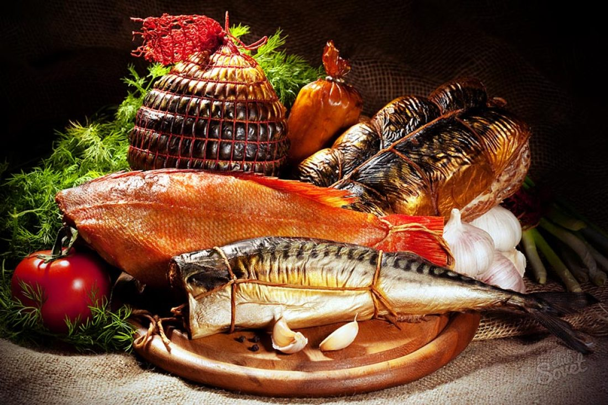
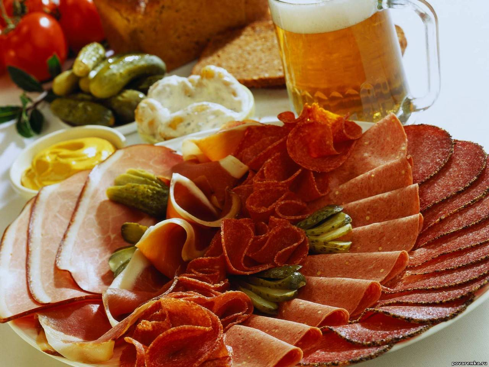
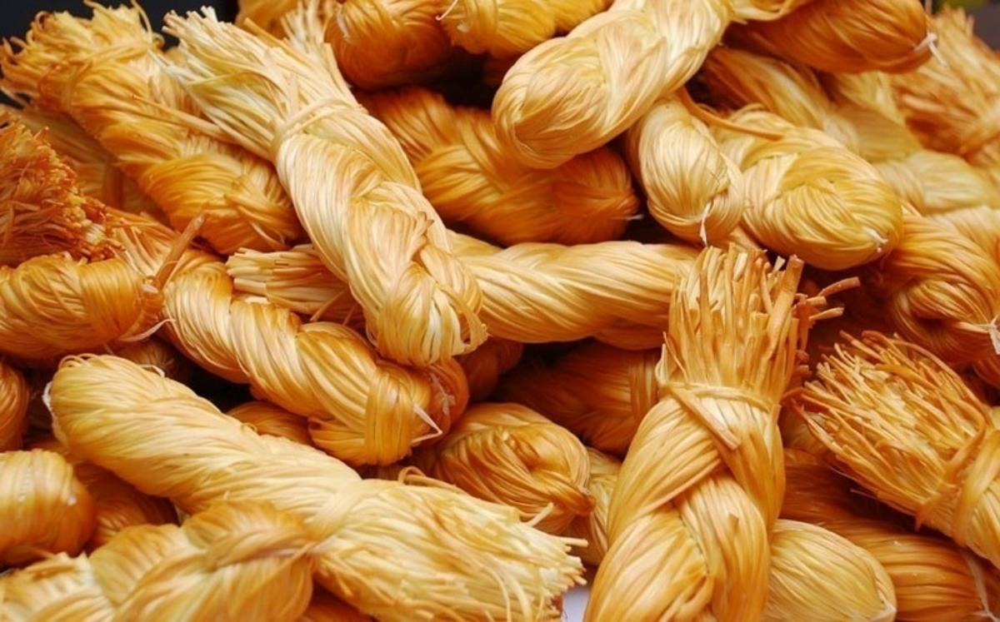
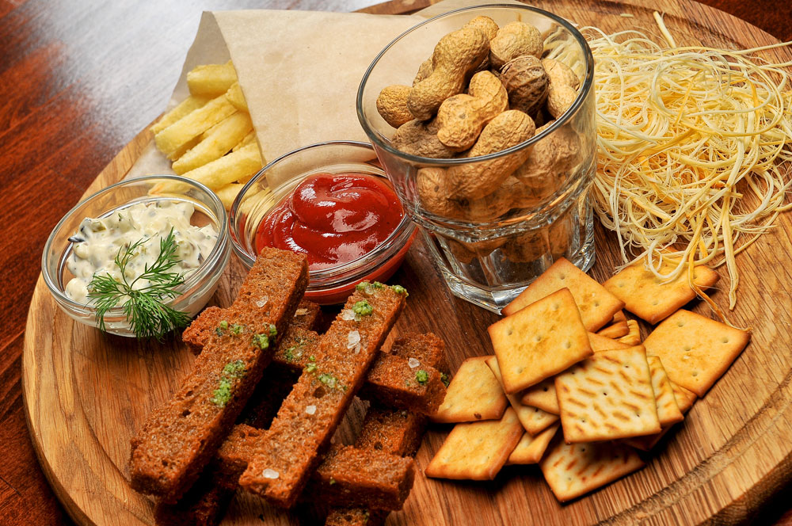
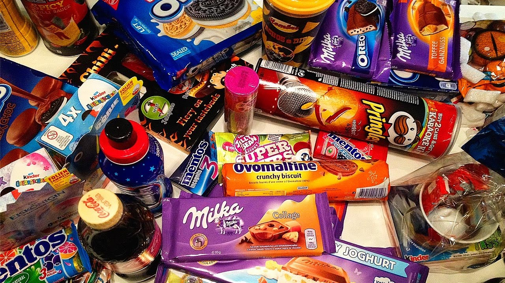

Каталог закусок
-

Рыбные закуски
Закуски из рыбы всегда выглядят изысканно и торжественно. Каждая хозяйка знает, что приготовление блюд из рыбы – работа кропотливая и непростая, поэтому присутствие на праздничном столе рыбных блюд всегда высоко ценится. Видя на столе красивое праздничное блюдо из рыбы, всегда приходит мысль о том, что хозяйка очень рада гостям и не пожалела собственного времени на приготовление более сложного блюда, по сравнению с обычным салатом или простой закуской. Как известно, праздничные столы не обходятся без закусок, а вот их разновидностей просто не перечислить. Праздничные закуски из рыбы – это нечто особенное. Вкус и аромат рыбы отлично сочетается с различными продуктами, поэтому многообразие рецептов блюд и закусок из рыбы просто поражает. -

Мясные закуски
Закуски из мяса всегда были и останутся обязательным блюдом на праздничном столе. Они могут быть горячими или холодными, сложными или простыми, но ни один праздничный стол без мясных закусок еще не обошелся. Мясные закуски превосходно сочетаются с любыми алкогольными напитками. И вообще, застолье может продолжаться долго, пока на праздничном столе присутствуют такие блюда. Закуски из мяса – это всегда сытно, вкусно, роскошно и торжественно. Какой бы ни был повод для торжества, на столе обязательно должны присутствовать праздничные мясные закуски. -

Сырные закуски
Сыр изготавливается людьми с незапамятных времен: по одной из версий его начали готовить еще в 8 тысячелетии до нашей эры. Изобретение сыра было связано с одомашниванием овец и предположительно произошло случайно: при хранении молока в желудках жвачных животных оно превращалось в творог и сыворотку, а причиной такого превращения был сычужный фермент, который содержится в желудках таких животных. Если предположительное время изобретения сыра указывается историками, то касательно места ничего наверняка не известно. За первенство в изобретении сыра соперничают Ближний Восток, Сахара, Центральная Азия и Европа. -

Снеки
Снэки — это продукты для быстрого и легкого утоления голода, закуски, употребление которых происходит между делом, на ходу. Современному человеку постоянно не хватает времени на ведение домашнего хозяйства, приготовление пищи и т.д. Изменения в культуре потребления различных товаров, постепенный переход от российских традиционных застолий к более легким формам отдыха способствуют созданию у потребителей новых предпочтений — использования готовых к употреблению закусок. Согласно международной классификации снэковыми являются картофельные и кукурузные чипсы, сырные и мясные снэки, соломка, печенье, мюсли, хрустящие хлопья, орешки, сухофрукты, шоколадные батончики и др. К снэкам также относятся и традиционные русские продукты — семечки и сухарики. -

Бакалея
Сладости (сласти, сладкие блюда) - кондитерские изделия или высококалорийные пищевые продукты с большим содержанием сахара, отличающиеся приятным вкусом и ароматом. Сладости обожают и взрослые, и дети. Сладости легко усваиваются, их можно довольно долго хранить, они содержат большое количество углеводов, дающих энергию – поэтому некоторые виды сладостей используют для питания спортсменов или в условиях туристических походов. Подают сладости, как правило, на десерт – вместе с чаем или кофе. На торжественных встречах, свадьбах отдельные виды сладостей сервируются заблаговременно – они являются украшением стола. Однако не стоит забывать, что чрезмерное употребление сладостей может привести к ожирению, сахарному диабету и другим заболеваниям.